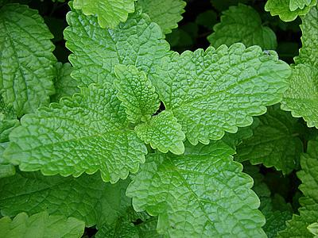

üçÄ Malvarisco (Plectranthus amboinicus)
Visualização 3D
Carregando modelo 3D...
Iniciando...
Gire o modelo com o mouse e use a rodinha para zoom
Descrição Botânica
O Malvarisco é uma planta que:
- Vive por vários anos (perene)
- Tem caules que podem crescer deitados ou eretos
- Possui folhas grossas, macias e peludas (aveludadas) com bordas arredondadas
- Quando esmagadas, suas folhas soltam um cheiro forte característico
- Cresce de 30 cm até 90 cm de altura
- Se espalha com facilidade
- Produz pequenas flores de cor roxa clara que nascem nas pontas dos ramos
Propriedades Medicinais
- Expectorante: Ajuda a soltar e eliminar o catarro
- Anti-inflamatório: Diminui inflamações, principalmente nos pulmões e garganta
- Antimicrobiano: Mata bactérias e outros micróbios
- Analgésico: Alivia dores, especialmente de garganta
- Antitussígeno: Reduz a tosse
Modos de Uso
Chá das Folhas
Como fazer:
- Ferva 1 xícara de água
- Desligue o fogo e acrescente 2-3 folhas frescas (ou 1 colher de folhas secas)
- Tampe e deixe descansar por 10 minutos
- Coe e beba ainda morno
Quantidade: 3-4 xícaras por dia
Xarope Caseiro
Como fazer:
- Misture em uma panela: 3 xícaras de água + 1 xícara de folhas picadas + 1 xícara de açúcar mascavo
- Cozinhe em fogo baixo por 20 minutos
- Coe e guarde em um pote de vidro na geladeira
Quantidade: 1 colher de sopa, 3 vezes ao dia
Cuidados e Contraindicações
- Não deve ser usado por grávidas ou mulheres amamentando
- Pessoas com problemas no fígado devem consultar médico antes de usar
- Não é recomendado para crianças menores de 2 anos
- Pode afetar o efeito de remédios para afinar o sangue
- Em excesso, pode irritar o estômago
Curiosidades
- Veio da Ásia e chegou ao Brasil na época da colonização
- Na Índia, é usado como tempero em vários pratos tradicionais
- É uma planta muito resistente e fácil de cultivar
- Há séculos é usado como remédio caseiro para gripes e tosses
- Seu cheiro forte ajuda a espantar alguns insetos
Monografia Científica
Baixar PDF Completo
Estudo detalhado pela UNICAMP - Departamento de Farmacognosia
Voltar para Catálogo